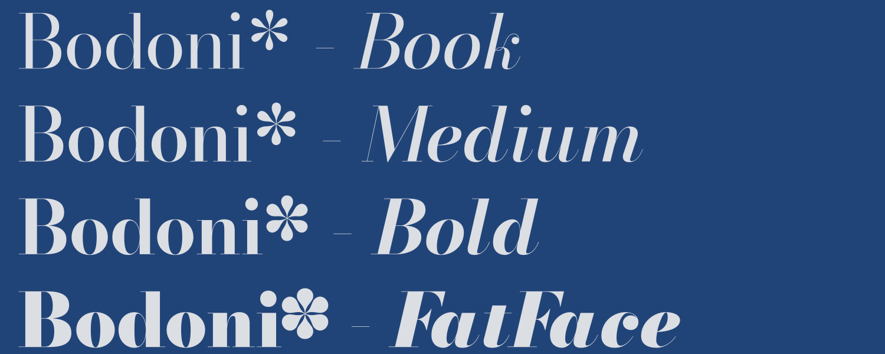
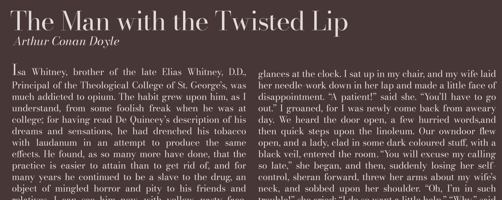
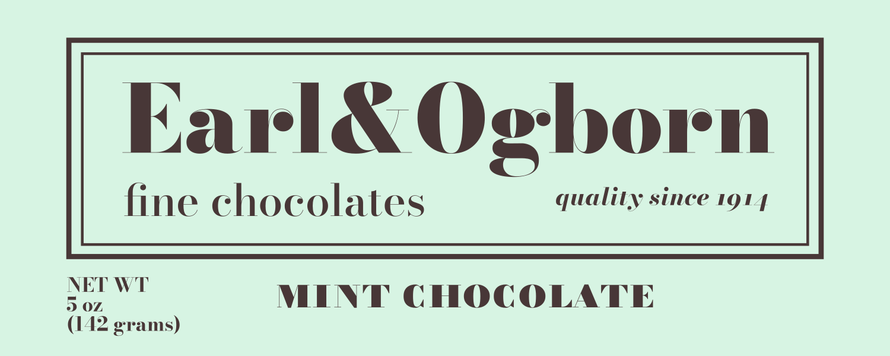

Reliably Elegant





About
About
A Brief History
Giambattista Bodoni is known for creating one of the first “modern serif” type-faces. Advances in printing technology during the late eighteenth century allowed Bodoni to design letterforms with higher contrast between thick and thin strokes, and crisp horizontal serifs. The result is a typeface that’s recognizably elegant, refined, and remains popular centuries after its creation.
The Bodoni That Should Have Come Years Ago
Despite the tremendous popularity of Bodoni typefaces, there is currently no digital family without compromises. Bodoni interpretations either work at display sizes and are impossible to read at text sizes, or are made to be legible at text sizes but look sloppy at display sizes. Users end up having to mix and match Bodonis, resulting in inconsistencies of design and quality. Bodoni* is the first ever no-compromises Bodoni family, built for the digital age. Years in the making, this font family includes a whopping 56 font files, ensuring you will have the perfect Bodoni for every situation.
No Compromises
To put it simply, I made this typeface the best it could possibly be. I built the font from the ground up, using the principles laid out by Bodoni himself in the Man-uale Tipografico. I want Bodoni* to be the ultimate digital realization of his ideas, and I stopped at nothing to ensure this.
Full Range of Weights & Matching Italics
Giambattista Bodoni made his fonts by pushing existing typographic ideas to their extremes, so it would only be fitting for this digital tribute to include weights all the way up to fatface. The fatface is the result of making a font so bold that it can’t be any bolder, and it’s popular for the dramatic effect it creates. However, most fatfaces don’t come with matching text weights. Bodoni* was built to include a fatface from the start and achieves one that is perfectly at home with its lighter counterparts. And of course, all weights come with corresponding italics, so you will never have any typographic needs that can’t be met with a style of Bodoni*.
Extended Character Set
Each style of Bodoni* includes hundreds of characters and supports over 50 languages. It also includes fractions and unusual punctuation such as the interro-bang. Bodoni* will not leave you with the frustrating experience of having ugly glyph substitutions.
OpenType Features
Bodoni* is made for the digital age and takes full advantage of OpenType features. It includes stylistic alternatives, and a full set of ligatures, all of which means that Bodoni* will subtly adapt itself to work well in every situation.
One Size Does Not Fit All
Giambattista Bodoni worked with physical type, which, despite its many limitations had one major advantage: when working with physical type, one will inevitably make different versions of each letterform for differ-ent sizes. Bodoni’s designs relied heavily on razor thin strokes, but what looks razor thin at text sizes will look thick at display sizes, and what looks elegant at display sizes is so thin at text sizes that it’s illegible. The solution is to make a different version of your typeface for different sizes, a solution that resembles the custom cutting of physical type. However, because this is so time consuming, most type designers will do three optical sizes at most. Bodoni* currently includes seven optical sizes, 11, 16, 24, 36, 48, 72, 96, and there are more planned. All of this means that Bodoni* will look perfect at any size, and those razor thin strokes will remain razor thin.
Convenient Web Hosting
Want to use Bodoni* on your website? indestructible type* now offers free and easy webfont hosting. Simply copy and paste the following code into the <head> of your website and use font-family: 'Bodoni 11'; in your css. Make sure to replace 11 with the optical size of your choosing. The best part is that as I continue to develop and update Bodoni*, your website will reflect these changes with no extra work from you.
<link rel="stylesheet" href="https://indestructibletype.com/fonts/Bodoni/Bodoni.css" type="text/css" charset="utf-8" />
Test Bodoni* Out
Free, Open Source, and Constantly Improving
Bodoni* is open source. Its development is public, so changes and improvements can come from you, the community that actually uses it. I have many big ideas for future features and fixes for Bodoni*, so supporting this project now will help support the future of this typeface. If you have ideas for how Bodoni* can be made better,
Download
The best way to test Bodoni* is to download and use it! Thanks to indestructible type*’s pay-what-you-want business model you can download the entire Bodoni* family for the price of your choosing. Test it out in the real world and come back and pay what you think it’s worth.